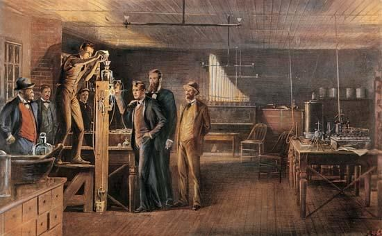

New Beginnings: The Invention of the Lightbulb
Author: Mathias V. Carcano | Date: 11/24 Today's Date
When one thinks of modern cities, they envision of tall skyscrapers and vibrant streets that sparkle more than the night sky. This vision we have today could not have been realized without the invention of the electric lightbulb. Although many inventors tinkered with the idea of electric lighting, it was Thomas Edison’s famous patent that ignited a revolution.
The late 19th century, known as the “Gilded Age,” was an ideal environment for such innovations. A mix of social, economic, and scientific factors spurred the development of groundbreaking technologies. At this time, electric light existed in various forms, but widespread adoption was limited by their short lifespans. Thus began the quest to discover a filament that could endure long enough to transform city life and people's daily routines. In 1879, Edison achieved that breakthrough.
The lightbulb ignited a wave of innovation in homes. Lives changed, as families could now enjoy evening activities like reading books or playing cards without the constant worry of house fires associated with gas lamps. This innovation paved the way for a cultural shift toward a more modern lifestyle, emphasizing convenience and comfort.
In summary, the invention of the lightbulb not only illuminated our physical spaces but also brightened our lives, setting the stage for the modern conveniences we enjoy today.